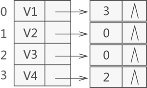

2020-07-02
23
图--知识点整理
图
一、基本概念
图 是由顶点的有穷非空集合和顶点之间边的集合组成，通常表示为：G(V,E)，其中，G表示一个图， V是图G中的顶点的集合，E是图G中边的集合。
有向图 图中任意两个顶点之间的边都是有向边。
无向图 图中任意两个顶点之间的边都是无向边。
1.图的基本术语
顶点：图中的数据元素。线性表中我们把数据元素叫元素，树中将数据元素叫结点。
简单图：图中不存在顶点到其自身的边，且同一条边不重复出现。
边：顶点之间的逻辑关系用边来表示，边集可以是空的。
无向边：若顶点V1到V2之间的边没有方向，则称这条边为无向边。其中，无向边用“（）”，而有向边用“< >”表示。
无向完全图：无向图中，任意两个顶点之间都存在边。
有向完全图：有向图中，任意两个顶点之间都存在方向互为相反的两条弧。
入度和出度：对于有向图中的一个顶点 V 来说，箭头指向 V 的弧的数量为 V 的入度（InDegree，记为 ID(V)）；箭头远离 V 的弧的数量为 V 的出度（OutDegree，记为OD(V)）。
权和网的含义：在某些实际场景中，图中的每条边（或弧）会赋予一个实数来表示一定的含义，这种与边（或弧）相匹配的实数被称为"权"，而带权的图通常称为网。
2.图的存储
图的顺序存储结构
结构表示的数据元素之间虽然具有"多对多"的关系，但是同样可以采用顺序存储，也就是使用数组有效存储图
使用数组存储图时，需要使用两个数组，一个数组存放图中顶点本身的数据（一维数组），另外一个数组用于存储各顶点之间的关系（二维数组）。
存储图中各顶点本身数据，使用一维数组就足够了；存储顶点之间的关系时，要记录每个顶点和其它所有顶点之间的关系，所以需要使用二维数组。
// --- 结构代码表示 ---
#define MAX_VERtEX_NUM 20 //顶点的最大个数
#define VRType int //表示顶点之间的关系的变量类型
#define InfoType char //存储弧或者边额外信息的指针变量类型
#define VertexType int //图中顶点的数据类型
typedef enum{DG,DN,UDG,UDN}GraphKind; //枚举图的 4 种类型
typedef struct {
VRType adj; //对于无权图，用 1 或 0 表示是否相邻；对于带权图，直接为权值。
InfoType * info; //弧或边额外含有的信息指针
}ArcCell,AdjMatrix[MAX_VERtEX_NUM][MAX_VERtEX_NUM];
typedef struct {
VertexType vexs[MAX_VERtEX_NUM]; //存储图中顶点数据
AdjMatrix arcs; //二维数组，记录顶点之间的关系
int vexnum,arcnum; //记录图的顶点数和弧（边）数
GraphKind kind; //记录图的种类
}MGraph;图1 有向图和无向图
图的邻接表存储法
邻接表存储图的实现方式是，给图中的各个顶点独自建立一个链表，用节点存储该顶点，用链表中其他节点存储各自的临界点。
使用邻接表计算无向图中顶点的入度和出度会非常简单，只需从数组中找到该顶点然后统计此链表中节点的数量即可。
邻接表计算顶点的出度和入度
而使用邻接表存储有向图时，通常各个顶点的链表中存储的都是以该顶点为弧尾的邻接点，因此通过统计各顶点链表中的节点数量，只能计算出该顶点的出度，而无法计算该顶点的入度。
对于利用邻接表求某顶点的入度，有两种方式：遍历整个邻接表中的节点，统计数据域与该顶点所在数组位置下标相同的节点数量，即为该顶点的入度； 建立一个逆邻接表，该表中的各顶点链表专门用于存储以此顶点为弧头的所有顶点在数组中的位置下标。比如说，建立一张图对应的逆邻接表，如图2所示：

图2 逆邻接表示意图
图2 逆邻接表示意图
图的十字链表存储
十字链表存储有向图（网）的方式与邻接表有一些相同，都以图（网）中各顶点为首元节点建立多条链表，同时为了便于管理，
还将所有链表的首元节点存储到同一数组（或链表）中
其中，建立个各个链表中用于存储顶点的首元节点结构如图 3 所示：

图 3 十字链表中首元节点结构示意图
从图 3 可以看出，首元节点中有一个数据域和两个指针域（分别用 firstin 和 firstout 表示）：
- firstin 指针用于连接以当前顶点为弧头的其他顶点构成的链表；
- firstout 指针用于连接以当前顶点为弧尾的其他顶点构成的链表；
- data 用于存储该顶点中的数据；
二、图的遍历
1.深度优先遍历
从图中某个顶点v出发，访问此顶点，然后从v的未被访问的邻接点出发深度优先遍历图，直至图中所有和v有路径相通的顶点都被访 问到。类似于树的先序遍历。

图 4 无向图
深度优先搜索的过程类似于树的先序遍历，首先从例子中体会深度优先搜索。例如图4是一个无向图，采用深度优先算法遍历这个图的过程为：
- 首先任意找一个未被遍历过的顶点，例如从 V1 开始，由于 V1 率先访问过了，所以，需要标记 V1 的状态为访问过；
- 然后遍历 V1 的邻接点，例如访问 V2 ，并做标记，然后访问 V2 的邻接点，例如 V4 （做标记），然后 V8 ，然后 V5 ；
- 当继续遍历 V5 的邻接点时，根据之前做的标记显示，所有邻接点都被访问过了。此时，从 V5 回退到 V8 ，看 V8 是否有未被访问过的邻接点，如果没有，继续回退到 V4 ， V2 ， V1 ；
- 通过查看 V1 ，找到一个未被访问过的顶点 V3 ，继续遍历，然后访问 V3 邻接点 V6 ，然后 V7 ；
- 由于 V7 没有未被访问的邻接点，所有回退到 V6 ，继续回退至 V3 ，最后到达 V1 ，发现没有未被访问的；
- 最后一步需要判断是否所有顶点都被访问，如果还有没被访问的，以未被访问的顶点为第一个顶点，继续依照上边的方式进行遍历。
根据上边的过程，可以得到图 1 通过深度优先搜索获得的顶点的遍历次序为：
V1 -> V2 -> V4 -> V8 -> V5 -> V3 -> V6 -> V7
#深度优先遍历
Void DFS(Vertex V)
{
visited[V] = true;
for (V的每个邻接点 W)
if(!visited[W])
DFS(W)
}2.广度优先遍历
访问v，访问v的各未访问的邻接点，之后逐个从这些邻接点出发重复上述操作。待与v连通的顶点访问毕再从另一顶点出发。
广度优先搜索类似于树的层次遍历。从图中的某一顶点出发，遍历每一个顶点时，依次遍历其所有的邻接点，然后再从这些邻接点
出发，同样依次访问它们的邻接点。按照此过程，直到图中所有被访问过的顶点的邻接点都被访问到。
还拿图 4 中的无向图为例，假设 V1 作为起始点，遍历其所有的邻接点 V2 和 V3 ，以 V2 为起始点，访问邻接点 V4 和 V5 ，以 V3 为起始点，访问邻接点 V6 、 V7 ，以 V4 为起始点访问 V8 ，以 V5 为起始点，由于 V5 所有的起始点已经全部被访问，所有直接略过， V6 和 V7 也是如此。
以 V1 为起始点的遍历过程结束后，判断图中是否还有未被访问的点，由于图 1 中没有了，所以整个图遍历结束。遍历顶点的顺序为：
V1 -> V2 -> v3 -> V4 -> V5 -> V6 -> V7 -> V8
#广度优先遍历
void BFS (Vertex V)
{
visited[V] = true;
Enqueue(V,Q);
while (!IsEmpty(Q))
{ V = Dequeue(Q);
for (V的每个邻接点W)
if (!visited[W])
{ visited[W] = true;
Enqueue(W,Q);
}
}
}三、最小生成树
找权值之和最小的极小连通子网，问题转换为在连通网中找一颗生成树
1.Kruaskal（克鲁斯卡） 算法
找权值最小的边，若并入后构成回路则舍弃。在图中找代价最小的边，若该边的顶点落在不同连通分量上，则将其并入，依次类推至所有顶点 到一个连通分量上，适合稀疏图。
假设连通网N=(V,E),将N中的边按权值从小到大的顺序排列。
- 初始状态为只有n个顶点而无边的非连通图T={V，{ }}，图中每个顶点自成一个连通分量。
- 在E 中选择代价最小的边，若该边依附的顶点落在T中不同的连通分量上，则将此边加入到T中(即不形成回路)，否则舍去此边而选择下一条代价最小的边。
- 重复上一步，直至T中所有顶点都在同一个连通分量上为止。
图 5 克鲁斯卡尔算法构造最小生成树
结构体数组Edge:存储边的信息，包括边的两个顶点信息和权值。
struct
{
VerTexType Head;//边的始点
VerTexType Tail;//边的终点
ArcType lowcost; // 边上的权值
}Edge[arcnum]Vexset[i]:标识各个顶点所属的连通分量。对每个顶点vi∈V ,在辅助数组存在一个相应元素Vexset[i]表示该顶点所在连通分量。初始时 Vexset[i],表示各个顶点自成一个连通分量。
int Vexset[Mvnum];算法步骤
- 将数组Edge中的元素按权值从小到大排序。
- 依次查看数组Edge中的边，循环执行以下操作：
- 依次从排序好的数组Edge中选出一条边（U1,U2）
- 在Vexset中分别查找v1和v2 所在的连通分量vs1 和vs2，并进行判断：
*如果vs1 和vs2不等，表明所选的两个顶点分属不同的连通分量，输出此边，并合并vs1 和vs2两个连通分量。
*如果vs1 和vs2相等，表明所选的两个顶点属于同一个连通分量，舍去此边而选择下一条权值最小的边。
void MiniSpanTree_Kruskal(MGraph G)
{//无向网以邻接矩阵形式存储，构造G的最小数T，输出T的各条边
sort(Edge);//将数组Edge中的元素按权值从小到大排序
for(i=0;i<G.vexnum;i++)//辅助数组，表示各个顶点自成一个连通分量
Vexset[i] = i;
for(i=0;i<G.arcnum;i++)//依次查看数组Edge中的边
{
v1 = LocateVex(G,Edge[i].Head);//v1为边的始点Head的下标
v2 = LocateVex(G,Edge[i].Tail);//v2为边的终点Tail的下标
vs1 = Vexset[v1];//获取边Edge[i]的始点所在的连通分量vs1
vs2 = Vexset[v2];//获取边Edge[i]的终点所在的连通分量vs2
if(vs1 != vs2)//边的两个顶点分属不同的连通分量
{
cout << Edge[i].Head<<Edge[i].Tail;//输出此边
for(j=0 ; j<G.vexnum;j++)//合并vs1 vs2两个分量，即两个集合统一编号
if(Vexset[j] == vs2) Vexset[j] =vs1;//集合编号为vs2的都改为vs1
}
}
}
2.Prim 算法
设U代表已并入最小生成树中的顶点的集合，最初任选一点放入U。之后找U到U最小边，将对应新顶点并入，共N-1轮即可。从顶点U0开始, 令U={U0},初始化U0到其余各顶点距离,（找最小的边输出，并入新顶点，赋0+更新表使U到非U距离更小）。如上重复n-1次。
假设N=(V,E)是连通图，TE是N上的最小生成树中边的集合。
- U={u0}(u0∈V)， TE={ }。
- 在所有u∈U，v∈V-U的边(u，v)∈E 中找一条代价(权值)最小的边(u0，v0) 并入集合TE，同时v0并入U。
- 重复上述步骤，直至U=V为止。 此时TE中必有n-1条边，则T= (V,{TE}) 为N的最小生成树。
图 6 普里姆算法构造最小生成树
为实现这个算法需附设一个辅助数组closedge,以记录从U到V-U具有最小权值的边。对每个顶点vi∈V-U，在辅助数组中存在一个相应分量 closedge[i-1]，他包含2个域：lowcost和adjvex,其中lowcost存储最小边上的权值，adjvex存储最小边在U中的那个顶点。显然 closedge[i-1].lowcost = Min{cost(u,vi)|u∈U},其中cost(u,v)表示赋予边（u,v）的权。
struct
{
VerTextType adjvex;//最小边在U中的那个顶点
ArcType lowcost;//最小边上的权值
}closedge[MVNum];首先将初始顶点u加入U中，对于其余的每一个顶点vj,将closedeg[j]均初始化为到u的边信息。
循环n-1次，做如下处理：
- 从各组边closedeg中选出最小边closedge[k],输出此边。
- 将k加入U中。
- 更新剩余的每组最小边信息closedeg[j],对于V-U中的边，新增加一条从k到j的边，如果新边的权值比closedeg[j].lowcost小， 则将closedge[j].lowcost更新为新边的权值。
void MiniSpanTree_Prim(AMGraph G,VerTexType u)
{//无向网G以邻接矩阵形式存储，从顶点u出发构造G的最小生成树，输出T的各条边
k = LocateVex(G,u);//k为顶点u的下标
for(j=0 ;j<G.vexnum;++j)//对于V-U的每一个顶点vj,初始化closedge[j]
if (j!=k) closedge[j] = {u,G.arcs[k][j]};//{adjvex,lowcost}
closedeg[k].lowcost = 0;//初始，U={u}
for(i=1;i<G.vexnum;++i)
{//选择其余n-1个顶点，生成n-1条边（n = G.vexnum）
k= Min(colsedge);
//求出T的下一个结点，第k个顶点，closedge[k]中存有当前最小边
u0 = closedge[k].adjvex;//u0为最小边的一个顶点，u0 ∈U
v0 = G.vexs[k];//v0为最小边的另一个顶点，v0∈V-U
cout<<u0<<v0;//输出当前最小边（u0,v0）
closedge[k].lowcost = 0;//第k个顶点并入U集
for(j=0;j<G.vexnum;++i)
if(G.arcs[k][j] < closedge[j].lowcost)//新顶点并入U后重新选择最小边
colsedge[j] = {G.vexs[k],G.arcs[k][j]};}
}
Comments

回复

回复

回复

回复